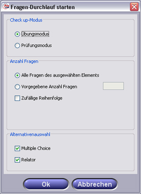

bzw. nächsten Frage springen


und ggf. Fragendurchlauf beenden
In der Check Up View können Sie Ihr bisher erworbenes Wissen testen. Hier finden Sie verschiedene Formen von Fragen zu den Inhalten aus der Text Study, der Slide Show oder anderen Views.
Um einen Check Up Durchlauf zu starten, müssen Sie ein Kapitel oder Element aus dem Strukturbaum auswählen und die "Start"-Schaltfläche aus dem Interaction Panel anklicken. Anschliessend können Sie auswählen, in welcher Form Sie befragt werden möchten, indem Sie in dem aufkommenden Dialog selektieren, welche Form der Abfrage erfolgen soll und mit einem Mausklick auf "OK" bestätigen.

Im Structure Tree, finden Sie neben den Ordnern, grundsätzlich 2 verschiede Formen von Abfragemöglichkeiten: Multiple Choice und Relator Elemente.
Wenn Sie eine Fragendurchlauf im Übungsmodus bearbeiten, können Sie jederzeit ein beliebiges Element aus dem Struturbaum auswählen, ohne den Fragendurchlauf beenden zu müssen. Durch Drücken der "Vor"- oder "Zurück"-Schaltfläche können Sie wieder in den Fragendurchlauf einsteigen. Bevor jedoch zur nächsten Frage gesprungen wird, werden Ihre Antworten ausgewertet und farblich markiert: grün für korrekte Antworten und rot für nicht korrekte Antworten.
Hinweis: Auch das Nicht-Beantworten von falschen Antwortmöglichkeiten wird als korrekte Antwort gewertet und geht in die Bewertung ein!
Im Prüfungsmodus wird die Baumansicht ausgeblendet, so dass während des Durchlaufs keine anderen Elemente ausgewählt werden können. Außerdem erhalten Sie keine optische Rückmeldung darüber, ob eine Antwort richtig oder falsch war. Darüber hinaus ist im Prüfungsmodus die Bearbeitungsreihenfolge fest vorgegeben. Sie müssen erst den gesamten Fragendurchlauf beenden, um die Ergebnisse zu den einzelnen Fragen im Evaluationsmodus zu betrachten. Beim Beenden eines Fragendurchlaufs im Prüfungsmodus wird automatisch zum Evaluationmodus gewechselt.
View-spezifische Interaktions-Schaltflächen
| |
Fragendurchlauf starten | Fragendurchlauf starten, bei dem das ausgewählte Element und alle Unterelemente enthalten sind |
|
Fragendurchlauf stoppen | Aktuell gestarteten Fragendurchlauf stoppen |
|
Vor / zurück | Während eines Fragendurchlaufs zur vorigen bzw. nächsten Frage springen |
|
Hinweis | Hinweis oder Kommentar des Autors anhören |
|
Evaluationsmodus | Zum Evaluationmodus wechseln und ggf. Fragendurchlauf beenden |
Zurück zur Hauptseite